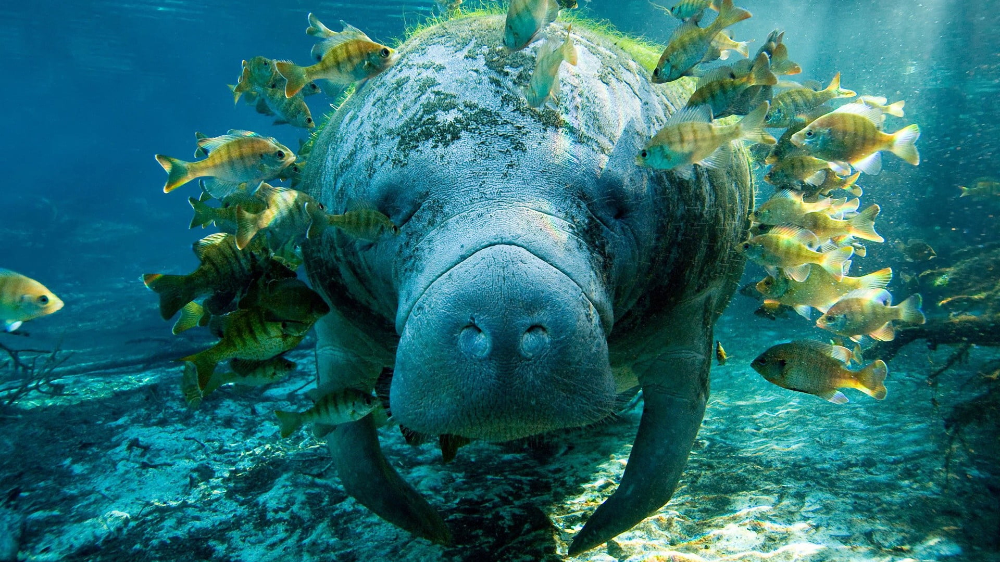

Welcome to the Sunshine Page
Floridas cutest aniamls

What makes Manatees so amazing?
-
They are called sea cows.
-
They were the inspiration to mermaid legends.
-
They can't turn their heads and must move their whole body to look around.
What makes Bobcats so amazing?
-
Well just look at how derpy and cute it's face is!
-
The can leap up to three meters in length!
-
bobcats have been known to take in domesticated kittens.
What makes Spoonbills so amazing?
-
They have a spoon for a mouth.
-
They live to be 16 years of age.
-
a group of Spoonbills are called a "Bowl".